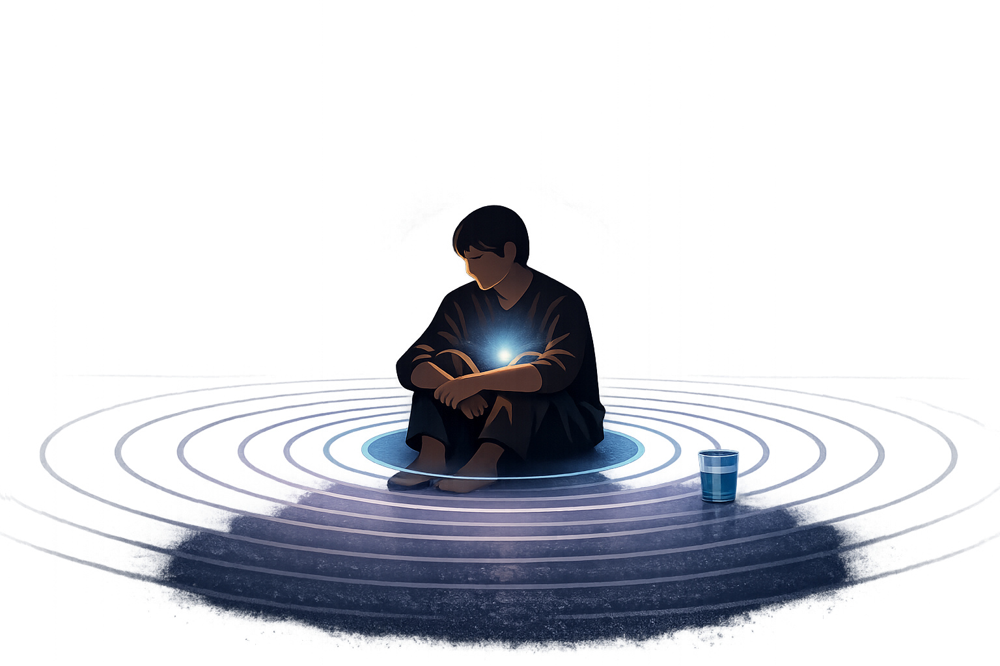
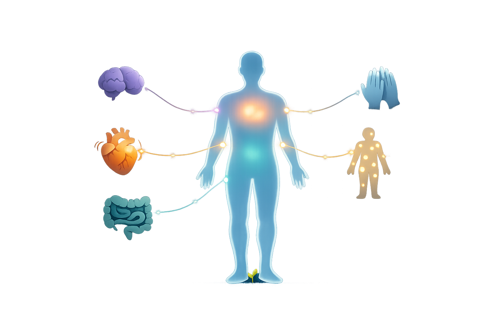

By Rustam Iuldashov
30 years lived experience with chronic migraine | Sources: 23 peer-reviewed references including BioPsychoSocial Medicine, J Headache Pain, Biomolecules, Neurological Sciences, Cephalalgia, Cell Genomics, PLOS ONE | Last updated: March 2026
Medical Review: This content is based on 23 peer-reviewed sources including BioPsychoSocial Medicine, Journal of Headache and Pain, Biomolecules, Neurological Sciences, Cephalalgia, Cell Genomics, PLOS ONE, and other authoritative journals.
Important Notice: This article is for informational purposes only and does not replace professional medical advice. Always consult a healthcare professional before starting or changing any treatment.
Key Takeaways
- Migraine’s most common comorbidities — depression, anxiety, fibromyalgia, IBS, and Raynaud’s — share the same core mechanisms: central sensitization and dysregulation of serotonin, dopamine, and norepinephrine[1][12][13][14]
- Migraineurs are approximately 2.5 times more likely to develop major depression; 30–50% of people with either condition will eventually develop the other[1][2]
- A 2023 meta-analysis of 340,000+ patients found migraineurs 2.51 times more likely to have IBS — with fibromyalgia and depression rates nearly identical across both conditions[4]
- Central sensitization — the nervous system’s learned amplification of pain signals — is the core mechanism linking migraine to fibromyalgia, IBS, and anxiety disorders[8][9][10]
- Anxiety directly worsens migraine by enhancing trigeminal sensitization through the amygdala and anterior cingulate cortex — it is a measurable risk factor for progression from episodic to chronic migraine[3][16]
- Raynaud’s phenomenon co-exists with migraine in ~26% of migraine patients; a 2024 genome-wide analysis confirmed a positive genetic correlation between the two conditions[6][7]
- Effective migraine care must address the full comorbidity picture — behavioral interventions for anxiety, depression, and sleep are not soft add-ons; they act directly on the sensitization process[11]
The “Bad Luck” Theory Is Wrong
There’s a story migraineurs tell themselves — or get told by doctors.
You have migraines. You also have depression. You also have irritable bowel syndrome. And those fingers that go white and painful in the cold? Probably unrelated.
What terrible luck, people say.
It isn’t luck at all.
I’ve lived with migraines for 30 years. In that time, I’ve watched the science move from treating migraine as “just headaches” toward something far more illuminating: migraine is a condition of a nervous system that has learned to amplify signals. And that nervous system doesn’t confine its effects to your skull. It shows up in your mood. Your gut. Your hands on a cold morning. Your capacity to feel safe in your own body.
This isn’t coincidence. This is neurobiology — and once you see it, you can’t unsee it.
The Numbers Are Striking
Start with what the research actually shows.
Migraineurs are approximately 2.5 times more likely to develop major depressive disorder than people without migraine.[1] The relationship runs in both directions: depression also predicts an earlier, more severe migraine onset — and significantly raises the risk of it becoming chronic.[1] Between 30% and 50% of people diagnosed with either condition will eventually develop the other.[2]
Anxiety follows the same pattern. A systematic review of 178 studies confirmed a bidirectional link between migraine and anxiety disorders, with comorbid anxiety substantially worsening headache frequency and accelerating the progression from episodic to chronic migraine.[3]
For irritable bowel syndrome, a 2023 meta-analysis pooling 22 studies and over 340,000 patients found that migraineurs are 2.51 times more likely to have IBS.[4] What’s striking isn’t just that number — it’s what comes next. The rates of depression and fibromyalgia in IBS patients and in migraine patients were nearly identical. Less than 5% apart.[4] That near-perfect symmetry is a scientific signal, not a footnote.
Fibromyalgia affects roughly 13% of migraine patients.[4] Raynaud’s phenomenon — the condition where fingers go white, blue, and painful in the cold — co-exists with migraine in approximately 26% of migraine patients in clinical studies.[6] And a 2024 genome-wide analysis of over 5,000 cases confirmed what clinicians had long suspected: there is a measurable positive genetic correlation between Raynaud’s syndrome and migraine.[7]
This is not a collection of unlucky people. This is a pattern. And patterns have causes.
The Nervous System That Can’t Stop Shouting
The cause begins with central sensitization — a phrase worth understanding, because it changes how you see everything.
Under normal conditions, your nervous system responds to genuine threats. Pain is the alarm. Once the threat passes, the alarm quiets.
In migraine, the quieting mechanism breaks down. Repeated activation of the trigeminal nerve system — the pain pathway at the center of migraine — causes the central nervous system to become progressively more sensitive.[8] The threshold for triggering the alarm drops. Eventually, stimuli that should cause nothing — a light touch, a shirt tag, a gentle breeze against the skin — are read as painful. This is called allodynia, and it occurs in approximately two-thirds of migraine patients during attacks.[9]
A 2026 systematic review and meta-analysis of 62 studies confirmed something even more unsettling: between attacks, migraine patients show reduced pain thresholds not just in the head and face, but in body areas that have nothing to do with the trigeminal zone.[10] The sensitization is systemic. The entire body has, in some sense, been taught to amplify pain.
Here’s what makes this so important: central sensitization is not unique to migraine. It is the primary proposed mechanism underlying fibromyalgia — widespread pain without any structural damage to explain it.[5] It is deeply implicated in IBS, where the gut’s pain signaling undergoes the same hyper-amplification.[4] It runs through the anxiety-migraine relationship, where comorbid anxiety directly modulates and intensifies sensitization — pushing the nervous system further toward the chronic state.[11]
These conditions don’t just coexist in the same body. They operate on the same machinery.

The Depression-Migraine Loop
Of all migraine’s companions, depression is the most studied — and the most instructive.
Both migraine and major depressive disorder involve dysregulation of the same neurotransmitters. Three in particular keep appearing in the research:[12][13][14]
- Serotonin — lower between attacks, surging during them. The same fluctuation pattern characterizes depressive states — and explains why triptans (serotonin agonists) and certain antidepressants both influence migraine.
- Dopamine — specific receptor variants have been associated with migraine with aura, anxiety, and depression simultaneously. Dysregulation in the dopamine pathway is tightly intertwined with both conditions.
- Norepinephrine — a key messenger for mood, pain, and arousal. Its regulation is disrupted in both migraine and depression, partly through shared brainstem pathways.
The thalamus sits at the intersection of all three. Brain imaging studies show decreased thalamic activity in people who have both migraine and depression compared to those with either condition alone — suggesting the comorbidity creates its own neurological state, not merely the sum of two separate diseases.[15]
The real-world consequence of this loop is brutal. Depression amplifies pain perception, disrupts sleep, erodes stress tolerance, and drains the capacity to self-manage attacks. Untreated migraine, in turn, generates helplessness, social isolation, and a constant low hum of anticipatory dread about the next attack. Each condition feeds the other. A neurologist treating the head and a psychiatrist treating the mood, working in separate offices, cannot fully break a loop that runs through the same brain.
Anxiety: The Accelerant
Anxiety deserves specific attention because its mechanism is particularly precise.
Long-term, unregulated stress and anxiety is now recognized as a major driver of trigeminal nerve hyperexcitability.[16] Chronic stress changes the expression of proteins involved in central sensitization — including elevated CGRP, the neuropeptide that has become the central therapeutic target in modern migraine treatment.[17] When anxiety is present and untreated, it is continuously reloading the gun.
The anatomy matters. The brain regions associated with anxiety — the amygdala, the anterior cingulate cortex — send direct inputs to thalamic neurons that relay migraine pain signals.[3] Anxiety doesn’t just make pain feel worse subjectively. It physically alters the circuitry through which pain travels. In patients with significant anxiety comorbidity, the progression from episodic to chronic migraine is meaningfully more likely.[3]
Managing anxiety isn’t a “soft” complement to migraine treatment. At the level of neuroscience, it is migraine treatment.
Fibromyalgia, IBS, and Raynaud’s: The Same Story, Different Organs
Fibromyalgia is perhaps the clearest illustration of what happens when central sensitization becomes generalized. Widespread pain without identifiable tissue damage. Fatigue. Sleep disruption. Cognitive fog. Many migraineurs will recognize several of these features in themselves — because they share the mechanism.[4][5]
IBS adds the gut-brain axis to the picture. Approximately 95% of the body’s serotonin is produced in the gut.[18] That same serotonin — the neurotransmitter linking migraine, depression, and pain modulation — runs a two-way communication channel between the enteric nervous system and the brain, carried along the vagus nerve. When migraine frequency increases, gastrointestinal symptoms tend to worsen in parallel.[4] When IBS flares, the migraine threshold frequently drops. This is not metaphor. It is a shared chemical conversation between two nervous systems that were never truly separate.
Raynaud’s connects through a different route: the autonomic nervous system and vascular dysregulation. Both Raynaud’s and migraine involve exaggerated vascular responses to triggers — cold and stress — with female predominance and documented autonomic dysfunction.[6][7] A 2022 study of Raynaud’s patients found an impaired sympathetic pathway response that mirrors the autonomic dysregulation seen in migraine.[22] The 2024 genetic study confirmed the link at the DNA level.[7]
The body expresses the same underlying disorder through whichever organ is most vulnerable.

Why Treating Migraine in Isolation Fails
When a migraineur visits a neurologist for migraine, a psychiatrist for depression, and a gastroenterologist for IBS — each provider sees one part of a system. None of them sees the system.
A 2025 paper stated this plainly: treating migraine and depression as distinct disorders leads to suboptimal outcomes, prolonged disease burden, and continued reliance on trial-and-error pharmacology.[2] The research now points clearly toward integrated care — but the medical system still largely delivers migraine treatment in silos.
The consequences are concrete. Untreated depression worsens migraine and raises the risk of chronification. Untreated anxiety continuously sensitizes the trigeminal system. Gut dysbiosis alters serotonin availability across the whole body. Each unaddressed thread pulls the entire web tighter. Medication overuse — a very common outcome when comorbidities drive undertreated pain — itself promotes central sensitization, adding a third loop that further entrenches every condition in the cluster.[8]
The system doesn’t just fail to help. Left unaddressed, it actively accelerates the disease.
What Whole-Person Care Actually Looks Like
Whole-person care isn’t a philosophy. It’s a clinical checklist with real items.
It means screening for depression and anxiety at every migraine appointment — not as a footnote, but as core assessment, because their presence directly changes both treatment choice and likely outcome.
It means recognizing that a migraine patient reporting abdominal cramps, widespread pain, fatigue, and cold-sensitive fingers is not describing four unrelated problems. They are describing the same dysregulated nervous system, expressing itself in four different organs.
It means that behavioral interventions — cognitive behavioral therapy for anxiety and depression, evidence-based sleep protocols, gut-directed hypnotherapy for IBS — are not alternative medicine. They are interventions that act on the central sensitization process at a level pharmacology alone cannot always reach.[11]
It means understanding that when a preventive medication works for migraine and also lifts mood — that overlap is a feature, not a coincidence. It’s the neurobiology confirming what the research has been saying.
After 30 years in this condition, the most useful reframe I’ve found is this: migraine is not a disease of the head. It is a disease of the nervous system’s relationship with the body. Treating it that way — looking at the whole web, not just the headache — is the difference between managing symptoms and actually changing where this goes.
⚠️ When to Seek Urgent Care
The following are not typical migraine symptoms. Seek emergency care immediately if you experience:
- The worst headache of your life, or a sudden “thunderclap” onset
- Headache with fever, stiff neck, or extreme light sensitivity (possible meningitis)
- New neurological symptoms: weakness, speech changes, vision loss, facial drooping
- Aura symptoms lasting more than 60 minutes without resolving
- A significant change in your previously stable migraine pattern
These symptoms require urgent evaluation to rule out serious underlying conditions. Do not wait for your next scheduled appointment.
Key Takeaways
- Migraine’s most common comorbidities — depression, anxiety, fibromyalgia, IBS, and Raynaud’s — share the same core mechanisms: central sensitization and dysregulation of serotonin, dopamine, and norepinephrine[1][12][13][14]
- Migraineurs are approximately 2.5 times more likely to develop major depression; 30–50% of people with either condition will eventually develop the other[1][2]
- IBS and migraine co-occur at more than twice the expected rate; their rates of depression and fibromyalgia comorbidity are nearly identical — a key clue about shared pathophysiology[4]
- Central sensitization — the nervous system’s learned amplification of pain — is the core mechanism linking migraine to fibromyalgia, IBS, and anxiety disorders[8][9][10]
- Anxiety directly worsens migraine by enhancing trigeminal sensitization and is a measurable risk factor for progression from episodic to chronic migraine[3][16]
- Effective migraine care must address the full comorbidity picture — leaving depression, anxiety, or sleep disorders untreated while managing migraine alone is likely to produce poor long-term outcomes[2][11]
⚕️ Important Medical Disclaimer
This article is for informational and educational purposes only and does not constitute medical advice, diagnosis, or treatment. The author, Rustam Iuldashov, is not a licensed physician, neurologist, or healthcare professional. He is a patient advocate with 30 years of personal experience living with chronic migraine.
All clinical claims in this article are sourced from peer-reviewed research published in indexed medical journals. Study designs and sample sizes are noted where applicable.
The conditions described in this article — depression, anxiety disorder, fibromyalgia, irritable bowel syndrome, and Raynaud’s phenomenon — each require professional diagnosis. Their presence alongside migraine does not confirm any of these diagnoses. Do not use this article to self-diagnose or to modify any existing treatment plan.
Behavioral interventions mentioned (CBT, ACT, gut-directed hypnotherapy) are complementary to, not replacements for, medical care. Always consult a qualified healthcare provider before starting any new therapeutic approach.
This content was last reviewed for accuracy in March 2026.
References
- Viudez-Martínez A, Torregrosa AB, Navarrete F, García-Gutiérrez MS. “Understanding the biological relationship between migraine and depression.” Biomolecules, 14(2):163 (2024). doi:10.3390/biom14020163. Study design: Narrative review. n=multiple pooled cohorts.
- Frontiers in Psychiatry. “A Hybrid Digital-4E Strategy for comorbid migraine and depression.” PMC12158715 (2025). Study design: Medical hypothesis / narrative review.
- Giannini G, et al. “Understanding the nature of psychiatric comorbidity in migraine: a systematic review focused on interactions and treatment implications.” Journal of Headache and Pain, 20:51 (2019). doi:10.1186/s10194-019-0988-x. Study design: Systematic review. n=178 studies.
- Todor TS, Fukudo S. “Systematic review and meta-analysis of calculating degree of comorbidity of irritable bowel syndrome with migraine.” BioPsychoSocial Medicine, 17(1):22 (2023). doi:10.1186/s13030-023-00275-4. Study design: Systematic review and meta-analysis. n=286,993 IBS patients + 53,520 migraine patients.
- CRA Insights. “The burden of non-specific pain disorders in US women.” Komodo Health claims data analysis (2023). n=large US insurance claims cohort.
- O’Keeffe ST, Tsapatsaris NP, Beetham WP Jr. “Increased prevalence of migraine and chest pain in patients with primary Raynaud disease.” Annals of Internal Medicine, 116:985–989 (1992). Study design: Cross-sectional. n=111 migraine patients.
- Lee N, Ok JH, Rhee SJ, Kim Y, et al. “Genetic and functional analysis of Raynaud’s syndrome implicates loci in vasculature and immunity.” Cell Genomics (2024). doi:10.1016/j.xgen.2024.100634. Study design: GWAS. n=>5,000 RS cases (FinnGen + UK Biobank).
- Su M, Yu S. “Chronic migraine: A process of dysmodulation and sensitization.” Molecular Pain, 14 (2018). doi:10.1177/1744806918767697. Study design: Narrative review.
- Dodick DW, Reed ML, Fanning KM, et al. “Predictors of allodynia in persons with migraine: Results from the MAST study.” Cephalalgia, 39(7):873–882 (2019). doi:10.1177/0333102418825346. Study design: Cross-sectional. n=15,133.
- Bertotti G, et al. “Human assumed central sensitization in interictal migraine: a systematic review and meta-analysis.” Neurological Sciences (2026). doi:10.1007/s10072-026-08825-8. Study design: Systematic review and meta-analysis. n=62 studies.
- Giannini G, et al. J Headache Pain 20:51 (2019). [as [3]].
- Viudez-Martínez A, et al. Biomolecules 14(2):163 (2024). [as [1]].
- Zarcone D, Corbetta S. “Shared mechanisms of epilepsy, migraine and affective disorders.” Neurological Sciences, 38(S1):73–76 (2017). doi:10.1007/s10072-017-2902-0. Study design: Narrative review.
- Pelzer N, de Boer I, van den Maagdenberg AMJM, Terwindt GM. “Neurological and psychiatric comorbidities of migraine: Concepts and future perspectives.” Cephalalgia, 43(6) (2023). doi:10.1177/03331024231180564. Study design: Narrative review.
- Ma M, et al. “Exploration of intrinsic brain activity in migraine with and without comorbid depression.” J Headache Pain, 19:48 (2018). doi:10.1186/s10194-018-0879-3. Study design: fMRI cross-sectional study.
- Huang Y, et al. “Global trends in migraine and anxiety over the past 10 years: a bibliometric analysis.” Frontiers in Neurology, 15:1448990 (2025). doi:10.3389/fneur.2024.1448990. Study design: Bibliometric analysis.
- Durham PL, et al. “Hypervigilance, Allostatic Load, and Migraine Prevention.” Neurology and Therapy, 10(2):469–497 (2021). doi:10.1007/s40120-021-00250-7. Study design: Narrative review.
- Kim DY, Camilleri M. “Serotonin: a mediator of the brain-gut connection.” American Journal of Gastroenterology, 95:2698–2709 (2000). doi:10.1111/j.1572-0241.2000.03177.x. Study design: Pharmacological review.
- Cuciureanu DI, et al. “Migraine Comorbidities.” Life (Basel), 14(1):74 (2024). doi:10.3390/life14010074. Study design: Narrative review.
- Karimi L, et al. “The Migraine-Anxiety Comorbidity Among Migraineurs: A Systematic Review.” Frontiers in Neurology, 11:613372 (2021). doi:10.3389/fneur.2020.613372. Study design: Systematic review.
- Francavilla M, et al. “Intestinal Microbiota’s Impact on Migraine with Psychopathologies.” Int J Mol Sci, 25(12):6655 (2024). doi:10.3390/ijms25126655. Study design: Narrative review.
- Lindberg L, et al. “Autonomic nervous system activity in primary Raynaud’s phenomenon.” Clinical Physiology and Functional Imaging, 42:104–113 (2022). doi:10.1111/cpf.12737. Study design: Case-control. n=15 patients + 15 controls.
- Rasmussen BR, Lyngberg OH, et al. “Comorbidities as risk factors for migraine onset: A systematic review and three-level meta-analysis.” European Journal of Neurology (2025). doi:10.1111/ene.70019. Study design: Systematic review and meta-analysis. n=17,330 records screened.

How We Create Content
- Peer-reviewed sources only. We cite research from BioPsychoSocial Medicine, Journal of Headache and Pain, Biomolecules, Neurological Sciences, Cephalalgia, Cell Genomics, Frontiers in Neurology, PLOS ONE, Clinical Physiology and Functional Imaging, European Journal of Neurology, and other authoritative journals.
- Large-sample evidence prioritized. Key claims reference a meta-analysis of 340,000+ patients, a genome-wide study of 5,000+ cases, and systematic reviews of 62–178 studies.
- Source transparency. All 23 references are numbered and verifiable. DOI links provided where available.
- Regular updates. We review articles when significant new research emerges. Next scheduled review: September 2026.
- No conflicts of interest. We receive no funding from pharmaceutical companies, supplement manufacturers, or any commercial entity with interest in migraine treatment.
Track the Full Picture — Not Just the Headache
Migraine Companion helps you log pain, mood, gut symptoms, sleep, and triggers together — so the patterns between your migraine and its comorbidities become visible. Built by someone who has lived this web for 30 years.
Last reviewed: March 2026
Next scheduled review: September 2026